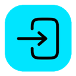

أتمتة تسجيل الدخول الجماعي لحسابات X.
حماية حقيقية — كل اشتراك يعمل على جهاز واحد فقط.
شغّل وراقب عدة هواتف متصلة في آنٍ واحد من شاشة واحدة.
العربية والإنجليزية والروسية، قابلة للتبديل الفوري.
برنامج سطح مكتب خفيف، لا يحتاج تثبيت Python أو أي أدوات إضافية.
التحميل مباشر، والتفعيل عبر ترخيص مرتبط بجهازك.
أحياناً يوقف X حساباً ويطلب تأكيد أنه ملكٌ لإنسان حقيقي، عبر مسح رمز QR بكاميرا هاتف مثبَّت عليه تطبيق X. مع عشرات أو مئات الحسابات، هذا يعني مسحاً يدوياً حساباً بعد حساب.
عند حسابات جديدة، كثيرة النشاط الآلي، أو مُستخدَمة من جهاز/موقع غير معتاد.
يفتح كل حساب فعلياً داخل تطبيق X الحقيقي على هاتف أندرويد متصل بالكمبيوتر — فيبدو الحساب وكأنه يُستخدَم من هاتف إنسان حقيقي.
التحقق يُجتاز تلقائياً لعدد كبير من الحسابات دفعة واحدة، دون مسح QR يدوي لكل حساب على حدة.
عرض تفاعلي مباشر لكل خطوة، من التحدي الذي يطرحه X حتى تأكيد الحساب تلقائياً.
امسح الرمز بكاميرا الهاتف للمتابعة
.
.
.
.
.
.